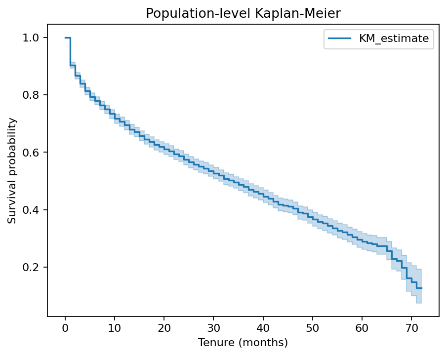
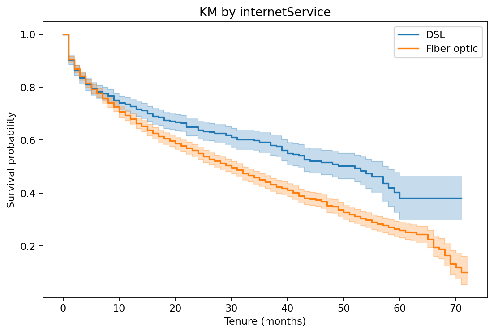
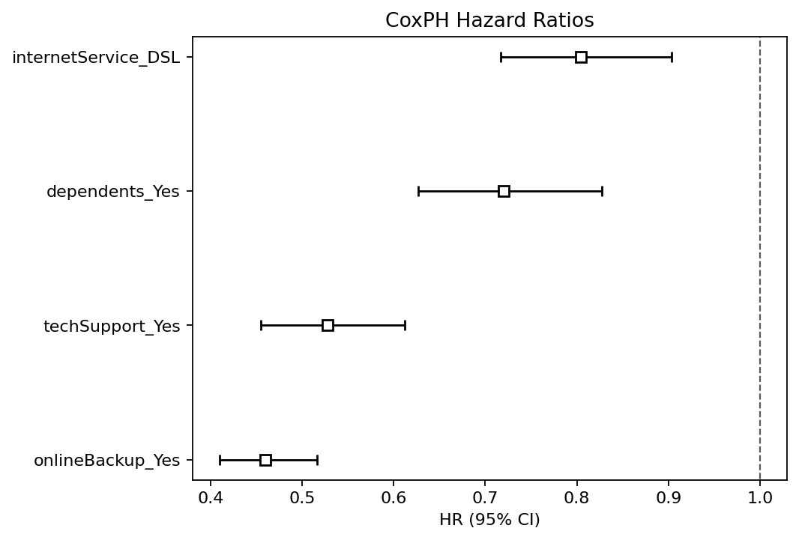
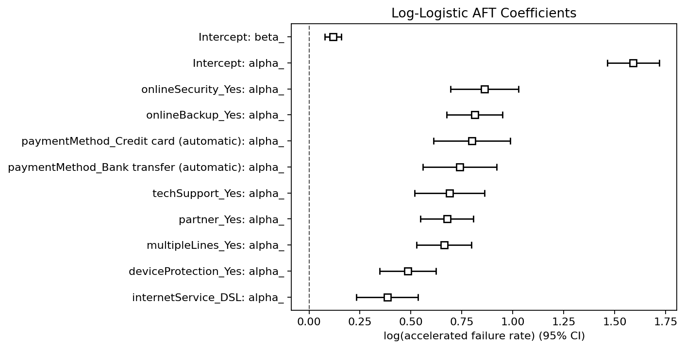
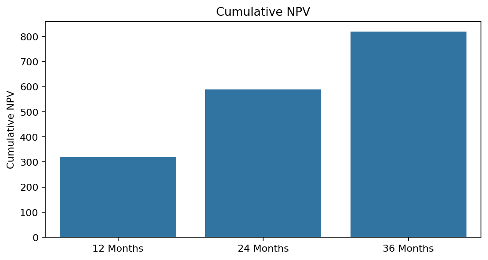
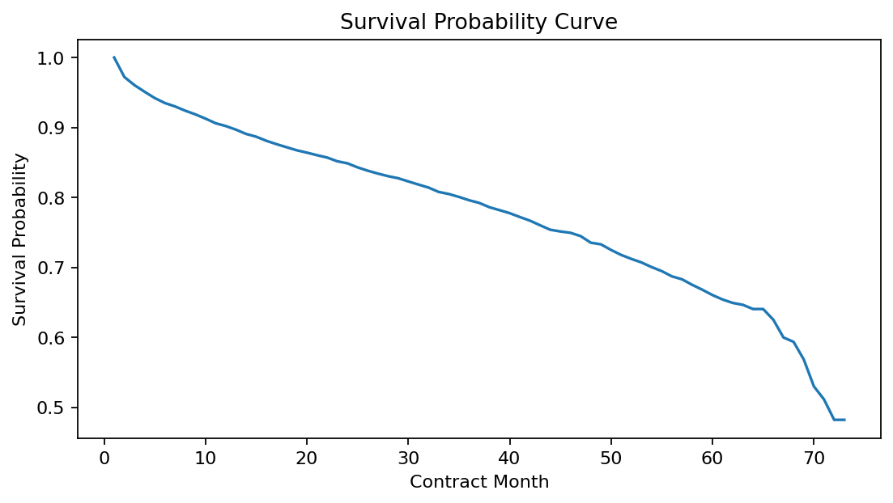

Project 1 - Q2 生存分析博客
对应课程要求 Q2(2)：说明生存分析过程并记录结果；并作为 Q2(4) 的博客页面证据。
1. 任务目标与数据
本项目使用 Telco churn 数据，目标是用生存分析方法刻画客户留存时间，解释影响流失的关键因素，并将生存概率用于 CLV 估计。
- 分析数据集（Silver）规模：3351
- 方法：Kaplan-Meier、Cox PH、AFT、CLV/NPV
- 实现文件：
Q2_survival_analysis_rewrite.ipynb
2. 生存分析流程
- 数据清洗与建模字段准备（含时间与事件定义）
- 总体与分组 Kaplan-Meier 曲线及 log-rank 检验
- Cox 比例风险模型拟合与风险比解释
- AFT 模型作为对照时间建模
- 基于生存曲线进行 CLV 累计 NPV 估计
3. 核心结果
- KM 中位生存时间：34.0 个月
- DSL vs Fiber optic 的 log-rank：p = 5.241449e-07
- Cox concordance：0.64
- CLV 累计 NPV（12/24/36 月）：320.31 / 589.49 / 818.84
3.1 Kaplan-Meier 曲线


3.2 Cox / AFT / CLV 结果图




4. Q2(3) Text-to-SQL 补充
在 MySQL + LLM 的实验中，主要失败类型包括：分位函数方言不兼容、加权中位数查询实现错误、MAD 双层中位数实现失败。最终均通过窗口函数改写得到可执行 SQL。
5. 结论
Q2 已完成从生存曲线到风险建模再到价值估计的完整链路。业务上可据此识别高风险群体并制定差异化留存策略。